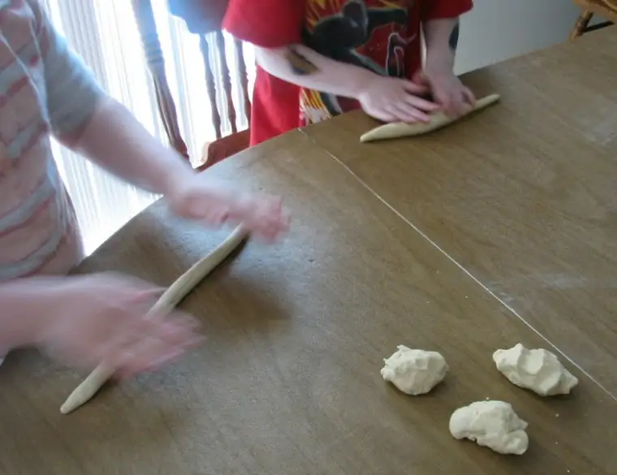

{kind=link}
{kind=link}
{kind=link}

All this to say, the kids didn’t have school today, and it seemed fitting to have a plan that would alleviate too much couch-potato inaction and/or mischievous moments caused by kids crying, “Well, I was sooooo bored!” So, out came the flour, and the butter, and the yeast and other baking igredients, and we got busy mixing and kneading and rolling and shaping and dipping and salting, and a few hours later, we treated ourselves to the first delicious batch of “fresh-from-the-oven” pretzels.
Yes, my diningroom table looked like it had been hit with an indoor blizzard and the kids appeared 90 years old from their flour-doused hair, but…I have to say, it was a good way to spend a few hours on a day out of routine.
In case you should want to give it a try, I’ve typed out the recipe below. I dare you — go ahead and get a little messy. Rolling out the dough is as fun as playing with Playdoh. Not only do you get to make those long, slithery snakes like back in the day, but you get to eat them too.
Happy pretzel-making!
Bread Pretzels or Sticks
(Makes 12 pretzels or 36 sticks)
Combine in mixing bowl:
1-1/2 C. flour
2 Tbsp. soft butter
½ tsp. salt
1 Tbsp. sugar
Combine in measuring cup:
1 C. 105-115 degrees water
1 pkg. active dry yeast
When the yeast is dissolved, add to the dry ingredients and beat for at least three minutes.
Stir in:
1-1/4 C. flour
Knead until the dough loses its stickiness. Let rise in a covered, greased bowl until doubled in size. Punch down and divide into 12 pieces for pretzels or 36 pieces for sticks. With your palms roll the 12 pretzels into 18-in. lengths, about pencil thickness, tapering the ends slightly. Loop into a twisted oval. Place on a greased baking sheet and let rise until almost doubled in bulk. Preheat oven to 475 degrees.
Have ready a boiling mixture of:
4 C. water
5 tsp. baking soda
Do not use aluminum pan for this mixture. With slotted spoon carefully lower the pretzels into the water about one minute or until they float to the top. Return them to the greased sheet.
Sprinkle with:
Coarse salt
Bake until crispy and brown about 12 minutes for the pretzels, less for the sticks. They are best served at once but will keep about one week in an airtight container. Cool before storing.
{kind=link}
{kind=link}